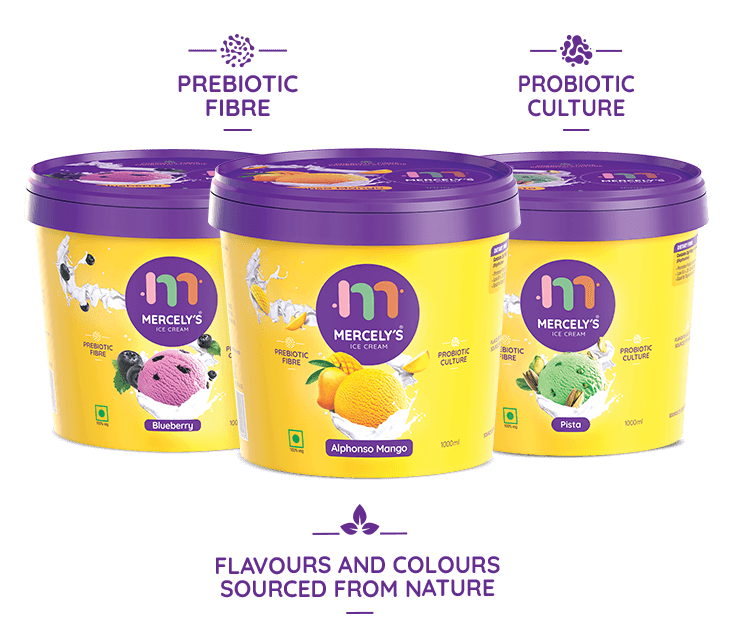

Mercelys Ice Cream


Fun dances with wellness. Creamy goodness duets with pure nature. Silky smooth ice cream does a salsa with sustainability. All
at Mercely’s – a world of natural ice creams, condiments, and confectionery.
Created in one of India’s largest factories, poised to take the ice cream industry to the next level.
Rich fruit pulp, fresh whole milk, and natural coloring and flavors.
Ice Creams with Prebiotic Fibers and Probiotic Cultures
Our journey: The belief that flavours our product
After 3 decades of successfully treating Kerala’s taste buds with whole pure milk ice creams our promoter Mr. Joseph M Kadambukattil decided to go a step higher. He added one main ingredient to all Mercely’s products – the belief in shared growth.That’s why we spread the sweetness to our farmers, distributors and retailers through a sustainable business model.
Transparent: So your eyes can taste the purity too!
Our factory is state of the art and ensures 99% hands free production of ice creams and condiments. We welcome our consumers and stakeholders to see it firsthand!
Healthy makes it tastier!
In a world of frozen
desserts, our ice creams
are made of pure, whole
milk, butter, and cream,
sourced from farmers
within a 35 km radius,
in just a couple of hours.
Nature gives us
better choices!
We know that we cannot beat nature to make things tasty! So our ice creams are made from pure fruit pulp, tender coconuts and natural flavours and colours. What’s not in nature is not in our products!
Sustainable model
We have a nurturing,
sustainable and
empathetic supply chain
that spreads the joy to
every stakeholder. The
ingredients are locally
sourced to encourage
farmers around us and
reduce our carbon footprint.